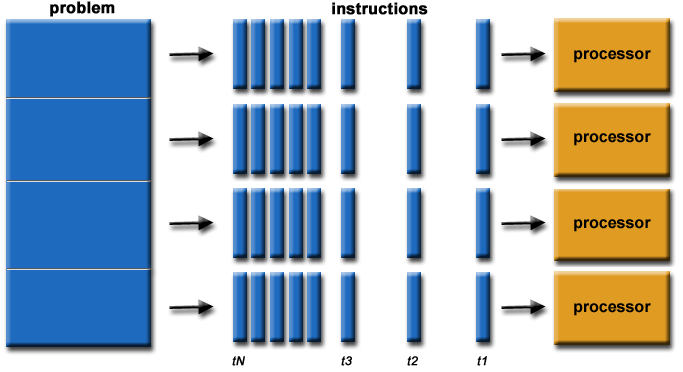
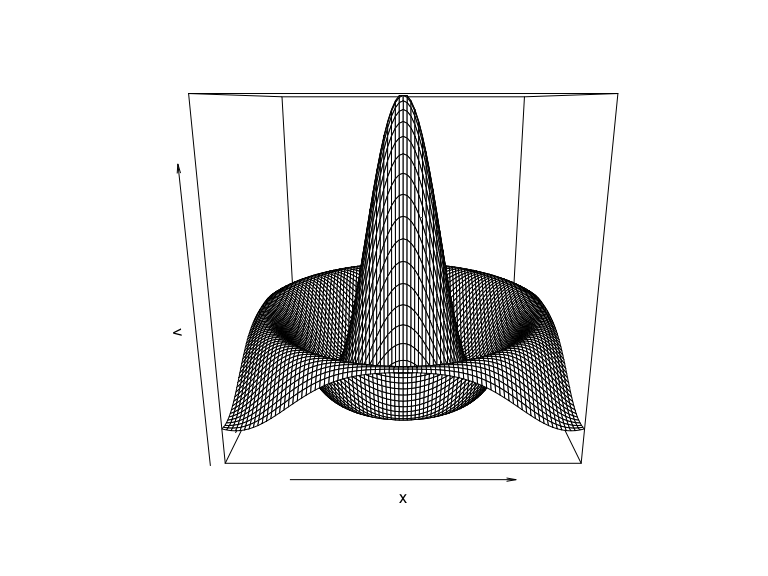

Parallel Processing
Course Schedule
Resource Presentations
” width=“100%” height=“800”> source
Case Study Presentations - Let’s pick a winner!
Next Week’s Case Study
Introduction to Parallel Processing
Serial Computing
Most (legacy) software is written for serial computation:
- Problem broken into discrete set of instructions
- Instructions executed sequentially on a single processor

Figure from here
Parallel computation
- Problem divided into discrete parts that can be solved concurrently
- Instructions executed simultaneously on different processors
- Overall control/coordination mechanism

Figure from here
Flynn’s taxonomy
A classification of computer architectures (Flynn, 1972)
Four Categories
- Single Instruction, Single Data (SISD)
- No parallelization
- Single Instruction, Multiple Data (SIMD)
- Run the same code/analysis on different datasets
- Examples:
- different species in species distribution model
- same species under different climates
- Multiple Instruction, Single Data (MISD)
- Run different code/analyses on the same data
- Examples:
- One species, multiple models
- Multiple Instruction, Multiple Data streams (MIMD)
- Run different code/analyses on different data
- Examples:
- Different species & different models
Flynn’s Taxonomy
Figure from here
Our focus: Single Instruction, Multiple Data (SIMD)
- Parallel functions within an R script
- starts on single processor
- runs looped elements on multiple ‘slave’ processors
- returns results of all iterations to the original instance
- foreach, multicore, plyr, raster
- Alternative: run many separate instances of R in parallel with
Rscript- need another operation to combine the results
- preferable for long, complex jobs
- NOT planning to discuss in this session
R Packages
There are many R packages for parallelization, check out the CRAN Task View on High-Performance and Parallel Computing for an overview. For example:
- Rmpi: Built on MPI (Message Passing Interface), a de facto standard in parallel computing.
- snow: Simple Network of Workstations can use several standards (PVM, MPI, NWS)
- parallel Built in R package (since v2.14.0).
- multidplyr
ForEach Package
In this session we’ll focus on the foreach package, which has numerous advantages including:
- intuitive
for()loop-like syntax - flexibility of parallel ‘backends’ from laptops to supercomputers
(
multicore,parallel,snow,Rmpi, etc.) - nice options for combining output from parallelized jobs
Documentation for foreach:
Foreach backends
- doParallel
best for use on multicore machines (uses
forkon linux/mac andsnowon windows). - doMPI: Interface to MPI (Message-Passing Interface)
- doSNOW: Simple Network of Workstations
Examples
Libraries
Sequential for loops
With for()
Sequential for loops
## [1] 1 4 9With foreach()
## [[1]]
## [1] 1
##
## [[2]]
## [1] 4
##
## [[3]]
## [1] 9x is a list with one element for each iterator variable
(i). You can also specify a function to use to combine the
outputs with .combine. Let’s concatenate the results into a
vector with c.
Sequential foreach() loop with
.combine
## [1] 1 4 9Tells foreach() to first calculate each iteration, then
.combine them with a c(...)
Sequential foreach() loop with
.combine
## [,1]
## result.1 1
## result.2 4
## result.3 9Another example
x <- seq(-8, 8, by=0.2)
v <- foreach(y=x, .combine="cbind") %do% {
r <- sqrt(x^2 + y^2)
sin(r) / r
}
persp(x, x, v)
Parallel foreach() loop
So far we’ve used %do% which uses a single
processor.
Must register a parallel backend with one of the
do* functions. On most multicore systems, the easiest
backend is typically doParallel(). On linux and mac, it
uses fork system call and on Windows machines it uses
snow backend. The nice thing is it chooses automatically
for the system.
registerDoParallel(3) # register specified number of workers
#registerDoParallel() # or, reserve all all available cores
getDoParWorkers() # check registered cores## [1] 3Parallel foreach() loop
To run in parallel, simply change the %do% to
%dopar%. Wasn’t that easy?
## [1] 1 4 9Test the relative speed
## 0.004 sec elapsed## 0.04 sec elapsedTest the relative speed
## 9.036 sec elapsed## 3.103 sec elapsedNested foreach loops
Example from the foreach vignette
avec = 1:4
bvec = 1:3
sim <- function(a, b) # example function
10 * a + b ^ 2
# use a standard nested for() loop:
x <- matrix(0, length(avec), length(bvec))
for (j in 1:length(bvec)) {
for (i in 1:length(avec)) {
x[i, j] <- sim(avec[i], bvec[j])
}
}
x## [,1] [,2] [,3]
## [1,] 11 14 19
## [2,] 21 24 29
## [3,] 31 34 39
## [4,] 41 44 49Nested Foreach
## result.1 result.2 result.3
## [1,] 11 14 19
## [2,] 21 24 29
## [3,] 31 34 39
## [4,] 41 44 49Again, simply change %do% to %dopar% to
execute in parallel.
Alternative backends: doMPI
Message Passing Interface: specification for an API for passing messages between different computers.
See here for details on using MPI on UB’s High Performance Computer Cluster.
Review Basic Steps
Most parallel computing:
- Split problem into pieces (iterators:
i=1:3) - Execute the pieces in parallel (
%dopar%) - Combine the results back (
.combine)
Useful foreach parameters
.inorder(true/false) results combined in the same order that they were submitted?.errorhandling(stop/remove/pass).packagespackages to made available to sub-processes.exportvariables to export to sub-processes
Multidplyr
Raster Package
Parallel processing with raster
Some functions in the raster package also easy to parallelize.
library(raster)
ncores=2
beginCluster(ncores)
fn=function(x) x^3 #define some function to calculate
r=raster() # make an empty raster
values(r)<-rnorm(ncell(r)) #fill it with random numbers## 0.006 sec elapsed## 0.435 sec elapsed## [1] TRUERaster package
The following raster functions are not
parallelized:
- merge
- crop
- mosaic
- (dis)aggregate
- resample
- projectRaster
- focal
- distance
- buffer
- direction
spatial.tools
However, check out the spatial.tools package
rasterEngine executes a function on Raster* object(s)
using foreach, to achieve parallel reads, executions and writes.
Summary
Each task should involve computationally-intensive work. If the tasks are very small, it can take longer to run in parallel.